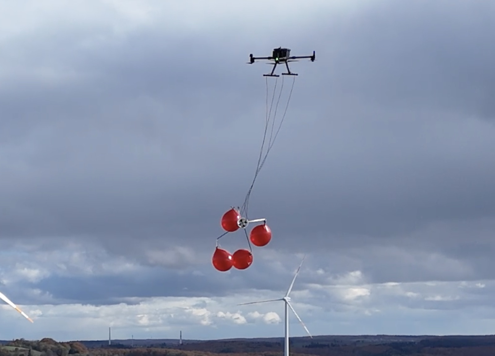
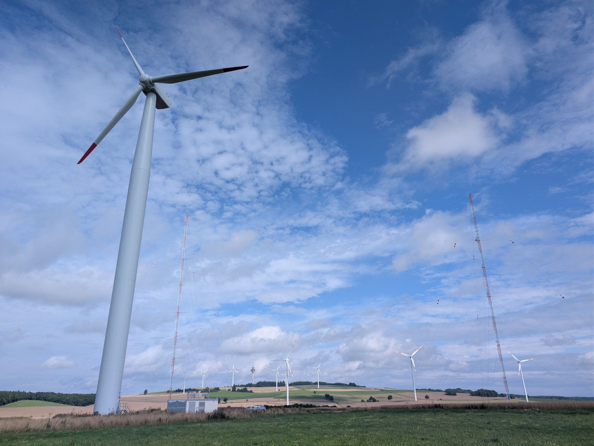
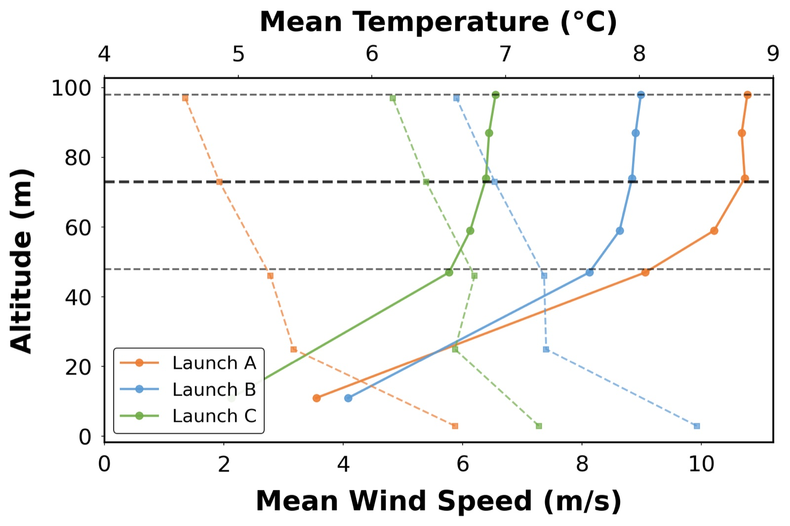
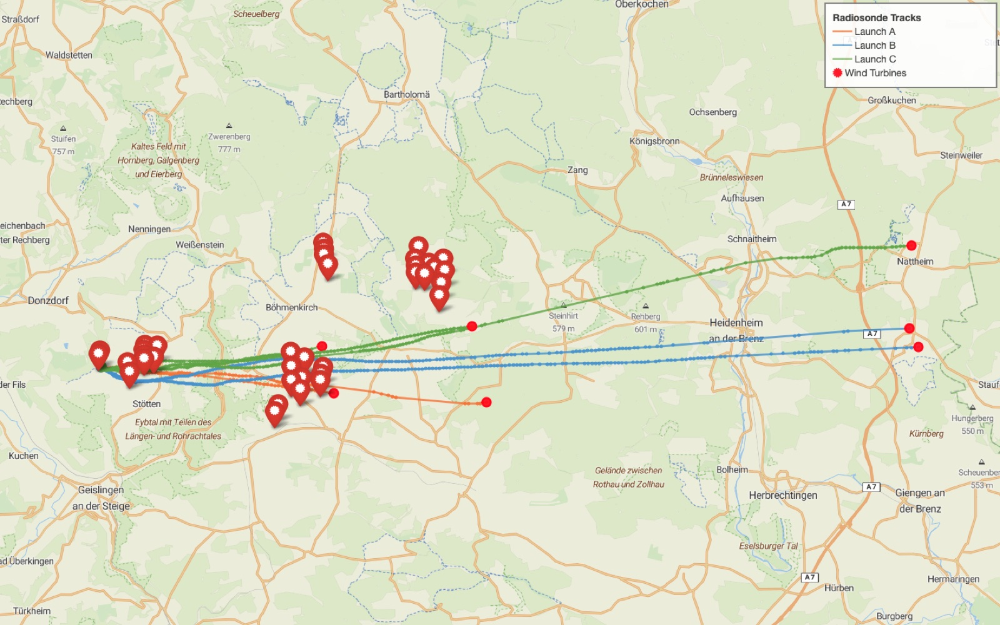
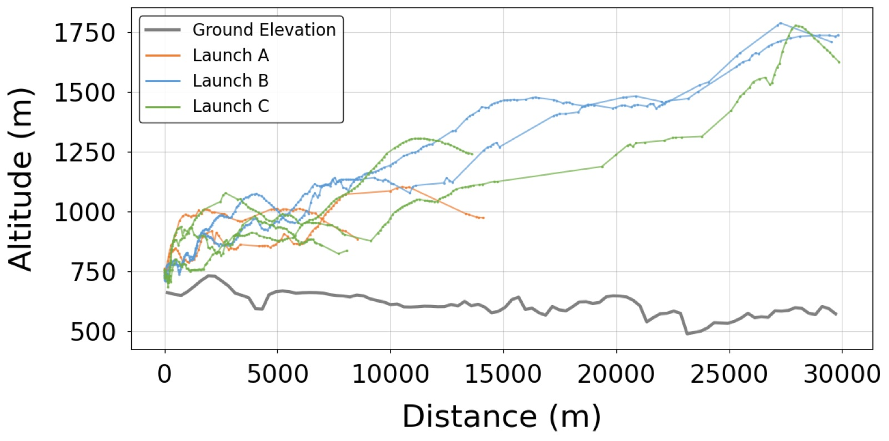

Idea
Wind turbines sit in the atmospheric surface layer and act like a sudden jump in surface roughness. An internal boundary layer grows through the farm, and shear at its edge pulls high-momentum air down through turbulent mixing. Following individual parcels of air through that process lets us see the mixing and entrainment as the flow itself does.

Explore the flights
This is the real October 2025 campaign at the WINSENT test site: terrain from elevation data, all 36 turbines in the area at their actual positions and hub heights, and the seven sonde tracks from Launches A, B and C. Press play to fly them on their recorded timing, or drag the slider to scrub through the flights.
| Sonde | Height above ground | From release | Temp. | Humidity | Pressure |
|---|
Launches are overlaid from their release time (local time, 24 Oct 2025). Tracks use the cleaned radiosonde data from the paper (pre-launch rows trimmed, outliers removed). Terrain: SRTM-based elevation tiles; turbine positions and sizes from OpenStreetMap. Heights, terrain and turbines are drawn with 3× vertical exaggeration.
System
- I designed an integrated hardware and software payload that pairs neutrally buoyant balloons with radiosondes, which transmit pressure, altitude, humidity and position to a ground receiver.
- A drone releases the tracers at a controlled height upstream of the turbines.
- Velocity and temperature profiles from the meteorological masts set the stability of the boundary layer for each launch, and onboard sensors were cross-validated against sonic anemometers and mast sensors.


From balloon to boundary layer
How a single flight turns into information about the atmosphere around a wind farm.
Release
A drone lifts the payload to release height upwind of the turbines and lets the balloons go one at a time.
Drift & measure
Each neutrally buoyant balloon follows the air through and around the turbine wakes, while its radiosonde samples position, pressure, temperature and humidity.
Telemetry
The radiosonde streams its measurements by radio to a receiver on the ground, so nothing has to be recovered.
Tracks to profiles
Differencing the GPS track gives the air's velocity along its path; combined with temperature and pressure it gives wind and potential-temperature profiles, and from those the stability of the boundary layer.
Schematic illustration; not measured data.
Results
Across three launches, the tracers passed through the turbines near the launch site and then through or around a second wind farm downstream, covering about 30 km. The tracks and the pressure, altitude and humidity profiles along them show that the method can resolve mixing over large distances with useful spatial and temporal resolution. Next we will compare the field data with large eddy simulations from the Johns Hopkins Turbulence Database.


Paper: A. Borra, F. Falkinhoff, M. Grunwald, G. Bagheri, E. Bodenschatz, C. E. Brunner. A Lagrangian tracer system using balloons to study wind farm interactions with the atmospheric boundary layer. J. Phys.: Conf. Ser. (TORQUE 2026). doi:10.1088/1742-6596/3224/3/032122